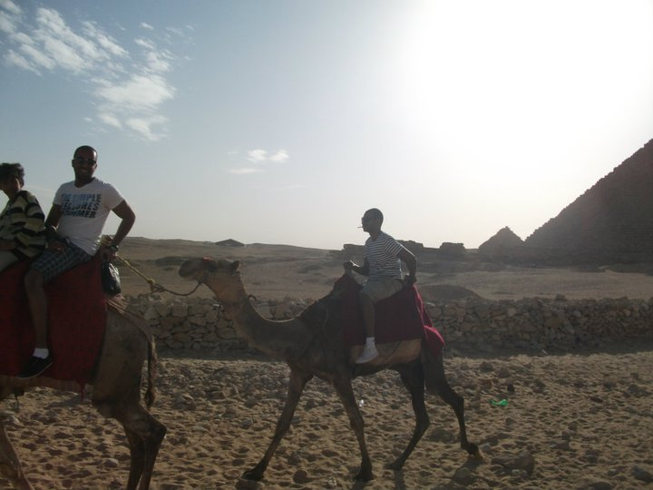

Elias Mohammed
Programutvecklare .Net
AboutJag söker idag efter en praktikplats (LIA = Lärande i arbete) där jag ska få fortsätta utveckla min programmering genom att få arbeta i en verklig arbetsmiljö. Jag söker ett företag som kan ta emot mig från slutet av februari till juni. Vem är jag? Min drivkraft sedan jag kom ut i arbetslivet har varit att få utvecklas. Därför har jag tagit på mig olika yrkesroller och uppdrag för att få nya erfarenheter och utmaningar och det har nu lett till att jag studerar programmering på Nackademin. Jag gillar att man arbetar med problemlösning och att detta är en bransch som ständigt utvecklas. En tidigare chef beskrev mig som en flexibel och prestigelös do:er. Jag tycker att den beskrivningen passar in bra på mig. klicka här för ett fullständigt personligt brev. |
 |
C#
MySql
HTML
CSS
JavaScript
Education |
Nackademin.Netutvecklare
2017-pågående
Här har jag studerat programmering med fokus på .Net. Med hjälp av skolan har jag fått en förståelse för programmering
och de olika språk som vi har studerat, främsty C#. Med hjälp av praktiken som ordnas via utbildnigne har jag utvecklas till att
en superprogrammerare.
|
Örebro UniversitetSamhälle– och Betendevetenskapligaprogrammet (210HP)
2006-2009
En utbildning som lärde mig om individer och samhälle formas. En bra och givande utbildning som alltid kommer att vara relevant och intressant.
|
KungsmadskolanEkonomi
2002 - 2005
Efter 3 år kallades jag gör Gymnasieekonom. Gav mig förståelse för grundläggande ekonomi.
|
Work |
Vårljus & Stockholm StadHandledare
2016-2017
Jag arbetade som handledare där jag vägledde nyanlända ungdomar. Jag arbetade som stöd för ungdomar och hjälpte till där dom kändes att det behövde. Det kunde handla om förklara hur hushållsarbete går till, till att vägleda inom studier. |
JAGRådgivare, Personal & Rekrytering
2015-2016
Jag drev ca 80 medlemmars assistanser tillsammans med 2 kollegor. Mitt huvudansvar var personal och rekryteringsfrågorna och jag tog hand om rekrytering från annons till anställning men även rehab- och personalfrågor. Gruppen fanns tillhands och stöttade medlemmar och arbetsledare i alla typer av frågor gällande assistansen.
|
KOMEXEgen Företagare
2013-2015
På uppdrag av arbetsförmedlingen hjälpte vi nyanlända att etablera sig i Sverige med egenförsörjning som mål. Min kompanjon och jag startade och drev verksamheten från upphandling till leverans av tjänst.
|